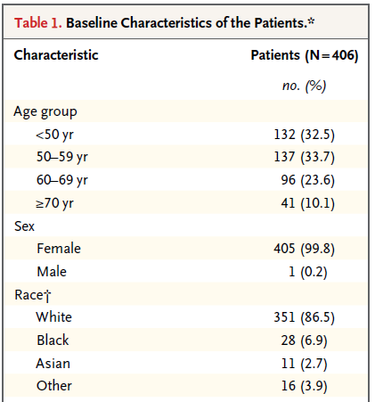
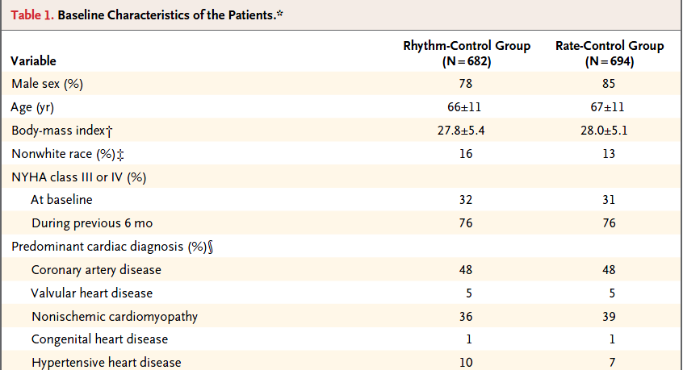
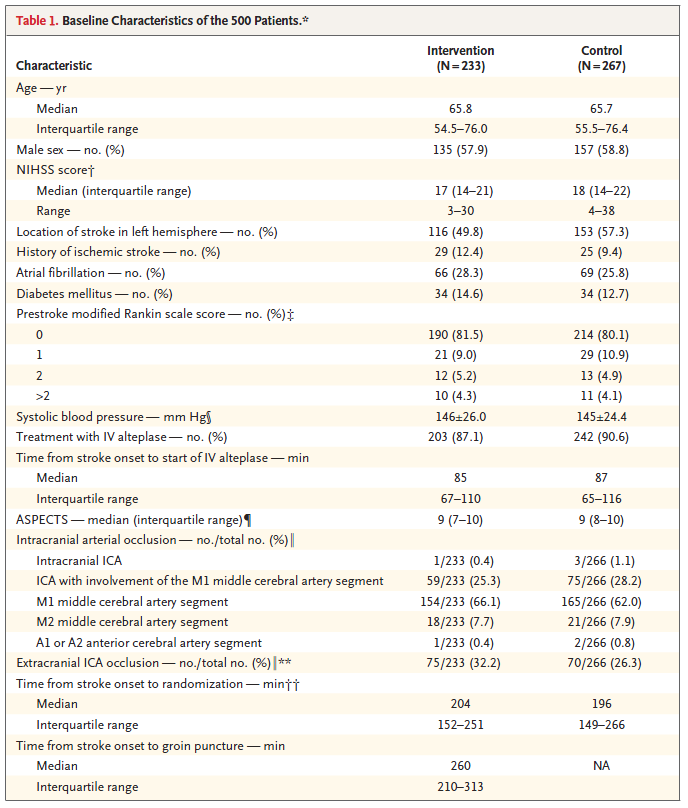
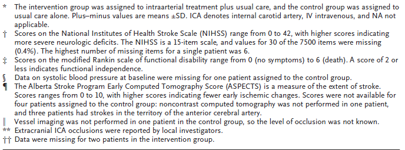
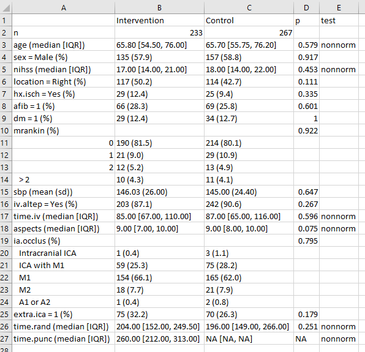
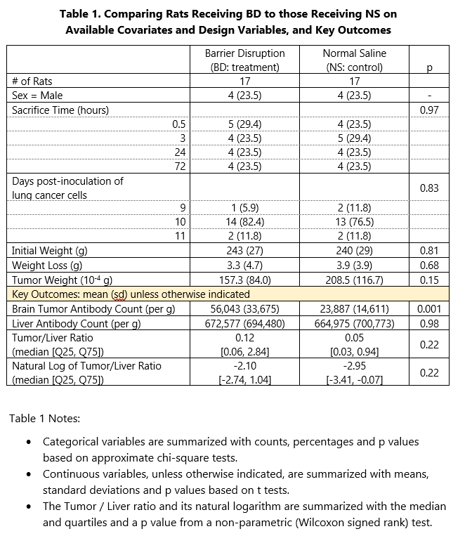

knitr::opts_chunk$set(comment = NA)
library(tableone)
library(knitr)
library(tidyverse)
theme_set(theme_bw())18 Building Table 1
18.1 R Setup Used Here
Many scientific articles involve direct comparison of results from various exposures, perhaps treatments. In 431, we studied numerous methods, including various sorts of hypothesis tests, confidence intervals, and descriptive summaries, which can help us to understand and compare outcomes in such a setting. One common approach is to present what’s often called Table 1. Table 1 provides a summary of the characteristics of a sample, or of groups of samples, which is most commonly used to help understand the nature of the data being compared.
18.2 Data Load
fakestroke <- read_csv("data/fakestroke.csv", show_col_types = FALSE)
bloodbrain <- read_csv("data/bloodbrain.csv", show_col_types = FALSE)18.3 Two examples from the New England Journal of Medicine
18.3.1 A simple Table 1
Table 1 is especially common in the context of clinical research. Consider the excerpt below, from a January 2015 article in the New England Journal of Medicine (Tolaney et al. 2015).

This (partial) table reports baseline characteristics on age group, sex and race, describing 406 patients with HER2-positive1 invasive breast cancer that began the protocol therapy. Age, sex and race (along with severity of illness) are the most commonly identified characteristics in a Table 1.
In addition to the measures shown in this excerpt, the full Table also includes detailed information on the primary tumor for each patient, including its size, nodal status and histologic grade. Footnotes tell us that the percentages shown are subject to rounding, and may not total 100, and that the race information was self-reported.
18.3.2 A group comparison
A more typical Table 1 involves a group comparison, for example in this excerpt from Roy et al. (2008). This Table 1 describes a multi-center randomized clinical trial comparing two different approaches to caring for patients with heart failure and atrial fibrillation2.

The article provides percentages, means and standard deviations across groups, but note that it does not provide p values for the comparison of baseline characteristics. This is a common feature of NEJM reports on randomized clinical trials, where we anticipate that the two groups will be well matched at baseline. Note that the patients in this study were randomly assigned to either the rhythm-control group or to the rate-control group, using blocked randomization stratified by study center.
18.4 The MR CLEAN trial
Berkhemer et al. (2015) reported on the MR CLEAN trial, involving 500 patients with acute ischemic stroke caused by a proximal intracranial arterial occlusion. The trial was conducted at 16 medical centers in the Netherlands, where 233 were randomly assigned to the intervention (intraarterial treatment plus usual care) and 267 to control (usual care alone.) The primary outcome was the modified Rankin scale score at 90 days; this categorical scale measures functional outcome, with scores ranging from 0 (no symptoms) to 6 (death). The fundamental conclusion of Berkhemer et al. (2015) was that in patients with acute ischemic stroke caused by a proximal intracranial occlusion of the anterior circulation, intraarterial treatment administered within 6 hours after stroke onset was effective and safe.
Here’s the Table 1 from Berkhemer et al. (2015).

The Table was accompanied by the following notes.

18.5 Simulated fakestroke data
Consider the simulated data, available on our Data and Code website in the fakestroke.csv file, which I built to let us mirror the Table 1 for MR CLEAN (Berkhemer et al. 2015). The fakestroke.csv file contains the following 18 variables for 500 patients.
| Variable | Description |
|---|---|
studyid |
Study ID # (z001 through z500) |
trt |
Treatment group (Intervention or Control) |
age |
Age in years |
sex |
Male or Female |
nihss |
NIH Stroke Scale Score (can range from 0-42; higher scores indicate more severe neurological deficits) |
location |
Stroke Location - Left or Right Hemisphere |
hx.isch |
History of Ischemic Stroke (Yes/No) |
afib |
Atrial Fibrillation (1 = Yes, 0 = No) |
dm |
Diabetes Mellitus (1 = Yes, 0 = No) |
mrankin |
Pre-stroke modified Rankin scale score (0, 1, 2 or > 2) indicating functional disability - complete range is 0 (no symptoms) to 6 (death) |
sbp |
Systolic blood pressure, in mm Hg |
iv.altep |
Treatment with IV alteplase (Yes/No) |
time.iv |
Time from stroke onset to start of IV alteplase (minutes) if iv.altep=Yes |
aspects |
Alberta Stroke Program Early Computed Tomography score, which measures extent of stroke from 0 - 10; higher scores indicate fewer early ischemic changes |
ia.occlus |
Intracranial arterial occlusion, based on vessel imaging - five categories3 |
extra.ica |
Extracranial ICA occlusion (1 = Yes, 0 = No) |
time.rand |
Time from stroke onset to study randomization, in minutes |
time.punc |
Time from stroke onset to groin puncture, in minutes (only if Intervention) |
Here’s a quick look at the simulated data in fakestroke.
fakestroke# A tibble: 500 × 18
studyid trt age sex nihss location hx.isch afib dm mrankin sbp
<chr> <chr> <dbl> <chr> <dbl> <chr> <chr> <dbl> <dbl> <chr> <dbl>
1 z001 Control 53 Male 21 Right No 0 0 2 127
2 z002 Interve… 51 Male 23 Left No 1 0 0 137
3 z003 Control 68 Fema… 11 Right No 0 0 0 138
4 z004 Control 28 Male 22 Left No 0 0 0 122
5 z005 Control 91 Male 24 Right No 0 0 0 162
6 z006 Control 34 Fema… 18 Left No 0 0 2 166
7 z007 Interve… 75 Male 25 Right No 0 0 0 140
8 z008 Control 89 Fema… 18 Right No 0 0 0 157
9 z009 Control 75 Male 25 Left No 1 0 2 129
10 z010 Interve… 26 Fema… 27 Right No 0 0 0 143
# ℹ 490 more rows
# ℹ 7 more variables: iv.altep <chr>, time.iv <dbl>, aspects <dbl>,
# ia.occlus <chr>, extra.ica <dbl>, time.rand <dbl>, time.punc <dbl>18.6 Building Table 1 for fakestroke: Attempt 1
Our goal, then, is to take the data in fakestroke.csv and use it to generate a Table 1 for the study that compares the 233 patients in the Intervention group to the 267 patients in the Control group, on all of the other variables (except study ID #) available. I’ll use the tableone package of functions available in R to help me complete this task. We’ll make a first attempt, using the CreateTableOne function in the tableone package. To use the function, we’ll need to specify:
- the
varsor variables we want to place in the rows of our Table 1 (which will include just about everything in thefakestrokedata except thestudyidcode and thetrtvariable for which we have other plans, and thetime.puncwhich applies only to subjects in the Intervention group.)- A useful trick here is to use the
dputfunction, specifically something likedput(names(fakestroke))can be used to generate a list of all of the variables included in thefakestroketibble, and then this can be copied and pasted into thevarsspecification, saving some typing.
- A useful trick here is to use the
- the
stratawhich indicates the levels want to use in the columns of our Table 1 (for us, that’strt)
fs.vars <- c("age", "sex", "nihss", "location",
"hx.isch", "afib", "dm", "mrankin", "sbp",
"iv.altep", "time.iv", "aspects",
"ia.occlus", "extra.ica", "time.rand")
fs.trt <- c("trt")
att1 <- CreateTableOne(data = fakestroke,
vars = fs.vars,
strata = fs.trt)
print(att1) Stratified by trt
Control Intervention p test
n 267 233
age (mean (SD)) 65.38 (16.10) 63.93 (18.09) 0.343
sex = Male (%) 157 (58.8) 135 (57.9) 0.917
nihss (mean (SD)) 18.08 (4.32) 17.97 (5.04) 0.787
location = Right (%) 114 (42.7) 117 (50.2) 0.111
hx.isch = Yes (%) 25 ( 9.4) 29 (12.4) 0.335
afib (mean (SD)) 0.26 (0.44) 0.28 (0.45) 0.534
dm (mean (SD)) 0.13 (0.33) 0.12 (0.33) 0.923
mrankin (%) 0.922
> 2 11 ( 4.1) 10 ( 4.3)
0 214 (80.1) 190 (81.5)
1 29 (10.9) 21 ( 9.0)
2 13 ( 4.9) 12 ( 5.2)
sbp (mean (SD)) 145.00 (24.40) 146.03 (26.00) 0.647
iv.altep = Yes (%) 242 (90.6) 203 (87.1) 0.267
time.iv (mean (SD)) 87.96 (26.01) 98.22 (45.48) 0.003
aspects (mean (SD)) 8.65 (1.47) 8.35 (1.64) 0.033
ia.occlus (%) 0.795
A1 or A2 2 ( 0.8) 1 ( 0.4)
ICA with M1 75 (28.2) 59 (25.3)
Intracranial ICA 3 ( 1.1) 1 ( 0.4)
M1 165 (62.0) 154 (66.1)
M2 21 ( 7.9) 18 ( 7.7)
extra.ica (mean (SD)) 0.26 (0.44) 0.32 (0.47) 0.150
time.rand (mean (SD)) 213.88 (70.29) 202.51 (57.33) 0.051 18.6.1 Some of this is very useful, and other parts need to be fixed.
- The 1/0 variables (
afib,dm,extra.ica) might be better if they were treated as the factors they are, and reported as the Yes/No variables are reported, with counts and percentages rather than with means and standard deviations. - In some cases, we may prefer to re-order the levels of the categorical (factor) variables, particularly the
mrankinvariable, but also theia.occlusvariable. It would also be more typical to put the Intervention group to the left and the Control group to the right, so we may need to adjust ourtrtvariable’s levels accordingly. - For each of the quantitative variables (
age,nihss,sbp,time.iv,aspects,extra.ica,time.randandtime.punc) we should make a decision whether a summary with mean and standard deviation is appropriate, or whether we should instead summarize with, say, the median and quartiles. A mean and standard deviation really only yields an appropriate summary when the data are least approximately Normally distributed. This will make the p values a bit more reasonable, too. Thetestcolumn in the first attempt will soon have something useful to tell us. - If we’d left in the
time.puncvariable, we’d get some warnings, having to do with the fact thattime.puncis only relevant to patients in the Intervention group.
18.6.2 fakestroke Cleaning Up Categorical Variables
Let’s specify each of the categorical variables as categorical explicitly. This helps the CreateTableOne function treat them appropriately, and display them with counts and percentages. This includes all of the 1/0, Yes/No and multi-categorical variables.
fs.factorvars <- c("sex", "location", "hx.isch", "afib", "dm",
"mrankin", "iv.altep", "ia.occlus", "extra.ica")Then we simply add a factorVars = fs.factorvars call to the CreateTableOne function.
We also want to re-order some of those categorical variables, so that the levels are more useful to us. Specifically, we want to:
- place Intervention before Control in the
trtvariable, - reorder the
mrankinscale as 0, 1, 2, > 2, and - rearrange the
ia.occlusvariable to the order4 presented in Berkhemer et al. (2015).
To accomplish this, we’ll use the fct_relevel function from the forcats package (loaded with the rest of the core tidyverse packages) to reorder our levels manually.
fakestroke <- fakestroke %>%
mutate(trt = fct_relevel(trt, "Intervention", "Control"),
mrankin = fct_relevel(mrankin, "0", "1", "2", "> 2"),
ia.occlus = fct_relevel(ia.occlus, "Intracranial ICA",
"ICA with M1", "M1", "M2",
"A1 or A2")
) 18.7 fakestroke Table 1: Attempt 2
att2 <- CreateTableOne(data = fakestroke,
vars = fs.vars,
factorVars = fs.factorvars,
strata = fs.trt)
print(att2) Stratified by trt
Intervention Control p test
n 233 267
age (mean (SD)) 63.93 (18.09) 65.38 (16.10) 0.343
sex = Male (%) 135 (57.9) 157 (58.8) 0.917
nihss (mean (SD)) 17.97 (5.04) 18.08 (4.32) 0.787
location = Right (%) 117 (50.2) 114 (42.7) 0.111
hx.isch = Yes (%) 29 (12.4) 25 ( 9.4) 0.335
afib = 1 (%) 66 (28.3) 69 (25.8) 0.601
dm = 1 (%) 29 (12.4) 34 (12.7) 1.000
mrankin (%) 0.922
0 190 (81.5) 214 (80.1)
1 21 ( 9.0) 29 (10.9)
2 12 ( 5.2) 13 ( 4.9)
> 2 10 ( 4.3) 11 ( 4.1)
sbp (mean (SD)) 146.03 (26.00) 145.00 (24.40) 0.647
iv.altep = Yes (%) 203 (87.1) 242 (90.6) 0.267
time.iv (mean (SD)) 98.22 (45.48) 87.96 (26.01) 0.003
aspects (mean (SD)) 8.35 (1.64) 8.65 (1.47) 0.033
ia.occlus (%) 0.795
Intracranial ICA 1 ( 0.4) 3 ( 1.1)
ICA with M1 59 (25.3) 75 (28.2)
M1 154 (66.1) 165 (62.0)
M2 18 ( 7.7) 21 ( 7.9)
A1 or A2 1 ( 0.4) 2 ( 0.8)
extra.ica = 1 (%) 75 (32.2) 70 (26.3) 0.179
time.rand (mean (SD)) 202.51 (57.33) 213.88 (70.29) 0.051 The categorical data presentation looks much improved.
18.7.1 What summaries should we show?
Now, we’ll move on to the issue of making a decision about what type of summary to show for the quantitative variables. Since the fakestroke data are just simulated and only match the summary statistics of the original results, not the details, we’ll adopt the decisions made by Berkhemer et al. (2015), which were to use medians and interquartile ranges to summarize the distributions of all of the continuous variables except systolic blood pressure.
- Specifying certain quantitative variables as non-normal causes R to show them with medians and the 25th and 75th percentiles, rather than means and standard deviations, and also causes those variables to be tested using non-parametric tests, like the Wilcoxon signed rank test, rather than the t test. The
testcolumn indicates this with the wordnonnorm.- In real data situations, what should we do? The answer is to look at the data. I would not make the decision as to which approach to take without first plotting (perhaps in a histogram or a Normal Q-Q plot) the observed distributions in each of the two samples, so that I could make a sound decision about whether Normality was a reasonable assumption. If the means and medians are meaningfully different from each other, this is especially important.
- To be honest, though, if the variable in question is a relatively unimportant covariate and the p values for the two approaches are nearly the same, I’d say that further investigation is rarely important,
- Specifying exact tests for certain categorical variables (we’ll try this for the
locationandmrankinvariables) can be done, and these changes will be noted in thetestcolumn, as well.- In real data situations, I would rarely be concerned about this issue, and often choose Pearson (approximate) options across the board. This is reasonable so long as the number of subjects falling in each category is reasonably large, say above 10. If not, then an exact test may be a tiny improvement.
- Paraphrasing Rosenbaum (2017), having an exact rather than an approximate test result is about as valuable as having a nice crease in your trousers.
To finish our Table 1, then, we need to specify which variables should be treated as non-Normal in the print statement - notice that we don’t need to redo the CreateTableOne for this change.
print(att2,
nonnormal = c("age", "nihss", "time.iv", "aspects", "time.rand"),
exact = c("location", "mrankin")) Stratified by trt
Intervention Control
n 233 267
age (median [IQR]) 65.80 [54.50, 76.00] 65.70 [55.75, 76.20]
sex = Male (%) 135 (57.9) 157 (58.8)
nihss (median [IQR]) 17.00 [14.00, 21.00] 18.00 [14.00, 22.00]
location = Right (%) 117 (50.2) 114 (42.7)
hx.isch = Yes (%) 29 (12.4) 25 ( 9.4)
afib = 1 (%) 66 (28.3) 69 (25.8)
dm = 1 (%) 29 (12.4) 34 (12.7)
mrankin (%)
0 190 (81.5) 214 (80.1)
1 21 ( 9.0) 29 (10.9)
2 12 ( 5.2) 13 ( 4.9)
> 2 10 ( 4.3) 11 ( 4.1)
sbp (mean (SD)) 146.03 (26.00) 145.00 (24.40)
iv.altep = Yes (%) 203 (87.1) 242 (90.6)
time.iv (median [IQR]) 85.00 [67.00, 110.00] 87.00 [65.00, 116.00]
aspects (median [IQR]) 9.00 [7.00, 10.00] 9.00 [8.00, 10.00]
ia.occlus (%)
Intracranial ICA 1 ( 0.4) 3 ( 1.1)
ICA with M1 59 (25.3) 75 (28.2)
M1 154 (66.1) 165 (62.0)
M2 18 ( 7.7) 21 ( 7.9)
A1 or A2 1 ( 0.4) 2 ( 0.8)
extra.ica = 1 (%) 75 (32.2) 70 (26.3)
time.rand (median [IQR]) 204.00 [152.00, 249.50] 196.00 [149.00, 266.00]
Stratified by trt
p test
n
age (median [IQR]) 0.579 nonnorm
sex = Male (%) 0.917
nihss (median [IQR]) 0.453 nonnorm
location = Right (%) 0.106 exact
hx.isch = Yes (%) 0.335
afib = 1 (%) 0.601
dm = 1 (%) 1.000
mrankin (%) 0.917 exact
0
1
2
> 2
sbp (mean (SD)) 0.647
iv.altep = Yes (%) 0.267
time.iv (median [IQR]) 0.596 nonnorm
aspects (median [IQR]) 0.075 nonnorm
ia.occlus (%) 0.795
Intracranial ICA
ICA with M1
M1
M2
A1 or A2
extra.ica = 1 (%) 0.179
time.rand (median [IQR]) 0.251 nonnorm18.8 Obtaining a more detailed Summary
If this was a real data set, we’d want to get a more detailed description of the data to make decisions about things like potentially collapsing categories of a variable, or whether or not a normal distribution was useful for a particular continuous variable, etc. You can do this with the summary command applied to a created Table 1, which shows, among other things, the effect of changing from normal to non-normal p values for continuous variables, and from approximate to “exact” p values for categorical factors.
Again, as noted above, in a real data situation, we’d want to plot the quantitative variables (within each group) to make a smart decision about whether a t test or Wilcoxon approach is more appropriate.
Note in the summary below that we have some missing values here. Often, we’ll present this information within the Table 1, as well.
summary(att2)
### Summary of continuous variables ###
trt: Intervention
n miss p.miss mean sd median p25 p75 min max skew kurt
age 233 0 0.0 64 18 66 54 76 23 96 -0.34 -0.52
nihss 233 0 0.0 18 5 17 14 21 10 28 0.48 -0.74
sbp 233 0 0.0 146 26 146 129 164 78 214 -0.07 -0.22
time.iv 233 30 12.9 98 45 85 67 110 42 218 1.03 0.08
aspects 233 0 0.0 8 2 9 7 10 5 10 -0.56 -0.98
time.rand 233 2 0.9 203 57 204 152 250 100 300 0.01 -1.16
------------------------------------------------------------
trt: Control
n miss p.miss mean sd median p25 p75 min max skew kurt
age 267 0 0.0 65 16 66 56 76 24 94 -0.296 -0.28
nihss 267 0 0.0 18 4 18 14 22 11 25 0.017 -1.24
sbp 267 1 0.4 145 24 145 128 161 82 231 0.156 0.08
time.iv 267 25 9.4 88 26 87 65 116 44 130 0.001 -1.32
aspects 267 4 1.5 9 1 9 8 10 5 10 -1.071 0.36
time.rand 267 0 0.0 214 70 196 149 266 120 360 0.508 -0.93
p-values
pNormal pNonNormal
age 0.342813660 0.57856976
nihss 0.787487252 0.45311695
sbp 0.647157646 0.51346132
time.iv 0.003073372 0.59641104
aspects 0.032662901 0.07464683
time.rand 0.050803672 0.25134327
Standardize mean differences
1 vs 2
age 0.08478764
nihss 0.02405390
sbp 0.04100833
time.iv 0.27691223
aspects 0.19210662
time.rand 0.17720957
=======================================================================================
### Summary of categorical variables ###
trt: Intervention
var n miss p.miss level freq percent cum.percent
sex 233 0 0.0 Female 98 42.1 42.1
Male 135 57.9 100.0
location 233 0 0.0 Left 116 49.8 49.8
Right 117 50.2 100.0
hx.isch 233 0 0.0 No 204 87.6 87.6
Yes 29 12.4 100.0
afib 233 0 0.0 0 167 71.7 71.7
1 66 28.3 100.0
dm 233 0 0.0 0 204 87.6 87.6
1 29 12.4 100.0
mrankin 233 0 0.0 0 190 81.5 81.5
1 21 9.0 90.6
2 12 5.2 95.7
> 2 10 4.3 100.0
iv.altep 233 0 0.0 No 30 12.9 12.9
Yes 203 87.1 100.0
ia.occlus 233 0 0.0 Intracranial ICA 1 0.4 0.4
ICA with M1 59 25.3 25.8
M1 154 66.1 91.8
M2 18 7.7 99.6
A1 or A2 1 0.4 100.0
extra.ica 233 0 0.0 0 158 67.8 67.8
1 75 32.2 100.0
------------------------------------------------------------
trt: Control
var n miss p.miss level freq percent cum.percent
sex 267 0 0.0 Female 110 41.2 41.2
Male 157 58.8 100.0
location 267 0 0.0 Left 153 57.3 57.3
Right 114 42.7 100.0
hx.isch 267 0 0.0 No 242 90.6 90.6
Yes 25 9.4 100.0
afib 267 0 0.0 0 198 74.2 74.2
1 69 25.8 100.0
dm 267 0 0.0 0 233 87.3 87.3
1 34 12.7 100.0
mrankin 267 0 0.0 0 214 80.1 80.1
1 29 10.9 91.0
2 13 4.9 95.9
> 2 11 4.1 100.0
iv.altep 267 0 0.0 No 25 9.4 9.4
Yes 242 90.6 100.0
ia.occlus 267 1 0.4 Intracranial ICA 3 1.1 1.1
ICA with M1 75 28.2 29.3
M1 165 62.0 91.4
M2 21 7.9 99.2
A1 or A2 2 0.8 100.0
extra.ica 267 1 0.4 0 196 73.7 73.7
1 70 26.3 100.0
p-values
pApprox pExact
sex 0.9171387 0.8561188
location 0.1113553 0.1056020
hx.isch 0.3352617 0.3124683
afib 0.6009691 0.5460206
dm 1.0000000 1.0000000
mrankin 0.9224798 0.9173657
iv.altep 0.2674968 0.2518374
ia.occlus 0.7945580 0.8189090
extra.ica 0.1793385 0.1667574
Standardize mean differences
1 vs 2
sex 0.017479025
location 0.151168444
hx.isch 0.099032275
afib 0.055906317
dm 0.008673478
mrankin 0.062543164
iv.altep 0.111897009
ia.occlus 0.117394890
extra.ica 0.129370206In this case, I have simulated the data to mirror the results in the published Table 1 for this study. In no way have I captured the full range of the real data, or any of the relationships in that data, so it’s more important here to see what’s available in the analysis, rather than to interpret it closely in the clinical context.
18.9 Exporting the Completed Table 1 from R to Excel or Word
Once you’ve built the table and are generally satisfied with it, you’ll probably want to be able to drop it into Excel or Word for final cleanup.
18.9.1 Approach A: Save and open in Excel
One option is to save the Table 1 to a .csv file within our data subfolder (note that the data folder must already exist), which you can then open directly in Excel. This is the approach I generally use. Note the addition of some quote, noSpaces and printToggle selections here.
fs.table1save <- print(att2,
nonnormal = c("age", "nihss", "time.iv", "aspects", "time.rand"),
exact = c("location", "mrankin"),
quote = FALSE, noSpaces = TRUE, printToggle = FALSE)
write.csv(fs.table1save, file = "data/fs-table1.csv")When I then open the fs-table1.csv file in Excel, it looks like this:

And from here, I can either drop it directly into Word, or present it as is, or start tweaking it to meet formatting needs.
18.9.2 Approach B: Produce the Table so you can cut and paste it
print(att2,
nonnormal = c("age", "nihss", "time.iv", "aspects", "time.rand"),
exact = c("location", "mrankin"),
quote = TRUE, noSpaces = TRUE)This will look like a mess by itself, but if you:
- copy and paste that mess into Excel
- select Text to Columns from the Data menu
- select Delimited, then Space and select Treat consecutive delimiters as one
you should get something usable again.
Or, in Word,
- insert the text
- select the text with your mouse
- select Insert … Table … Convert Text to Table
- place a quotation mark in the “Other” area under Separate text at …
After dropping blank columns, the result looks pretty good.
18.10 A Controlled Biological Experiment - The Blood-Brain Barrier
My source for the data and the following explanatory paragraph is page 307 from Ramsey and Schafer (2002). The original data come from Barnett et al. (1995).
The human brain (and that of rats, coincidentally) is protected from the bacteria and toxins that course through the bloodstream by something called the blood-brain barrier. After a method of disrupting the barrier was developed, researchers tested this new mechanism, as follows. A series of 34 rats were inoculated with human lung cancer cells to induce brain tumors. After 9-11 days they were infused with either the barrier disruption (BD) solution or, as a control, a normal saline (NS) solution. Fifteen minutes later, the rats received a standard dose of a particular therapeutic antibody (L6-F(ab’)2. The key measure of the effectiveness of transmission across the brain-blood barrier is the ratio of the antibody concentration in the brain tumor to the antibody concentration in normal tissue outside the brain. The rats were then sacrificed, and the amounts of antibody in the brain tumor and in normal tissue from the liver were measured. The study’s primary objective is to determine whether the antibody concentration in the tumor increased when the blood-barrier disruption infusion was given, and if so, by how much?
18.11 The bloodbrain.csv file
Consider the data, available on our Data and Code website in the bloodbrain.csv file, which includes the following variables:
| Variable | Description |
|---|---|
case |
identification number for the rat (1 - 34) |
brain |
an outcome: Brain tumor antibody count (per gram) |
liver |
an outcome: Liver antibody count (per gram) |
tlratio |
an outcome: tumor / liver concentration ratio |
solution |
the treatment: BD (barrier disruption) or NS (normal saline) |
sactime |
a design variable: Sacrifice time (hours; either 0.5, 3, 24 or 72) |
postin |
covariate: Days post-inoculation of lung cancer cells (9, 10 or 11) |
sex |
covariate: M or F |
wt.init |
covariate: Initial weight (grams) |
wt.loss |
covariate: Weight loss (grams) |
wt.tumor |
covariate: Tumor weight (10-4 grams) |
And here’s what the data look like in R.
bloodbrain# A tibble: 34 × 11
case brain liver tlratio solution sactime postin sex wt.init wt.loss
<dbl> <dbl> <dbl> <dbl> <chr> <dbl> <dbl> <chr> <dbl> <dbl>
1 1 41081 1456164 0.0282 BD 0.5 10 F 239 5.9
2 2 44286 1602171 0.0276 BD 0.5 10 F 225 4
3 3 102926 1601936 0.0642 BD 0.5 10 F 224 -4.9
4 4 25927 1776411 0.0146 BD 0.5 10 F 184 9.8
5 5 42643 1351184 0.0316 BD 0.5 10 F 250 6
6 6 31342 1790863 0.0175 NS 0.5 10 F 196 7.7
7 7 22815 1633386 0.0140 NS 0.5 10 F 200 0.5
8 8 16629 1618757 0.0103 NS 0.5 10 F 273 4
9 9 22315 1567602 0.0142 NS 0.5 10 F 216 2.8
10 10 77961 1060057 0.0735 BD 3 10 F 267 2.6
# ℹ 24 more rows
# ℹ 1 more variable: wt.tumor <dbl>18.12 A Table 1 for bloodbrain
Barnett et al. (1995) did not provide a Table 1 for these data, so let’s build one to compare the two solutions (BD vs. NS) on the covariates and outcomes, plus the natural logarithm of the tumor/liver concentration ratio (tlratio). We’ll opt to treat the sacrifice time (sactime) and the days post-inoculation of lung cancer cells (postin) as categorical rather than quantitative variables.
bloodbrain <- bloodbrain %>%
mutate(logTL = log(tlratio))
dput(names(bloodbrain))c("case", "brain", "liver", "tlratio", "solution", "sactime",
"postin", "sex", "wt.init", "wt.loss", "wt.tumor", "logTL")OK - there’s the list of variables we’ll need. I’ll put the outcomes at the bottom of the table.
bb.vars <- c("sactime", "postin", "sex", "wt.init", "wt.loss",
"wt.tumor", "brain", "liver", "tlratio", "logTL")
bb.factors <- c("sactime", "sex", "postin")
bb.att1 <- CreateTableOne(data = bloodbrain,
vars = bb.vars,
factorVars = bb.factors,
strata = c("solution"))
summary(bb.att1)
### Summary of continuous variables ###
solution: BD
n miss p.miss mean sd median p25 p75 min max skew
wt.init 17 0 0 243 3e+01 2e+02 2e+02 3e+02 2e+02 3e+02 -0.39
wt.loss 17 0 0 3 5e+00 4e+00 1e+00 6e+00 -5e+00 1e+01 -0.10
wt.tumor 17 0 0 157 8e+01 2e+02 1e+02 2e+02 2e+01 4e+02 0.53
brain 17 0 0 56043 3e+04 5e+04 4e+04 8e+04 6e+03 1e+05 0.29
liver 17 0 0 672577 7e+05 6e+05 2e+04 1e+06 2e+03 2e+06 0.35
tlratio 17 0 0 2 3e+00 1e-01 6e-02 3e+00 1e-02 9e+00 1.58
logTL 17 0 0 -1 2e+00 -2e+00 -3e+00 1e+00 -4e+00 2e+00 0.08
kurt
wt.init 0.7
wt.loss 0.2
wt.tumor 1.0
brain -0.6
liver -1.7
tlratio 1.7
logTL -1.7
------------------------------------------------------------
solution: NS
n miss p.miss mean sd median p25 p75 min max skew
wt.init 17 0 0 240 3e+01 2e+02 2e+02 3e+02 2e+02 3e+02 0.33
wt.loss 17 0 0 4 4e+00 3e+00 2e+00 7e+00 -4e+00 1e+01 -0.09
wt.tumor 17 0 0 209 1e+02 2e+02 2e+02 3e+02 3e+01 5e+02 0.63
brain 17 0 0 23887 1e+04 2e+04 1e+04 3e+04 1e+03 5e+04 0.30
liver 17 0 0 664975 7e+05 7e+05 2e+04 1e+06 9e+02 2e+06 0.40
tlratio 17 0 0 1 2e+00 5e-02 3e-02 9e-01 1e-02 7e+00 2.27
logTL 17 0 0 -2 2e+00 -3e+00 -3e+00 -7e-02 -5e+00 2e+00 0.27
kurt
wt.init -0.48
wt.loss 0.08
wt.tumor 0.77
brain -0.35
liver -1.56
tlratio 4.84
logTL -1.61
p-values
pNormal pNonNormal
wt.init 0.807308940 0.641940278
wt.loss 0.683756156 0.876749808
wt.tumor 0.151510151 0.190482094
brain 0.001027678 0.002579901
liver 0.974853609 0.904045603
tlratio 0.320501715 0.221425879
logTL 0.351633525 0.221425879
Standardize mean differences
1 vs 2
wt.init 0.08435244
wt.loss 0.14099823
wt.tumor 0.50397184
brain 1.23884159
liver 0.01089667
tlratio 0.34611465
logTL 0.32420504
=======================================================================================
### Summary of categorical variables ###
solution: BD
var n miss p.miss level freq percent cum.percent
sactime 17 0 0.0 0.5 5 29.4 29.4
3 4 23.5 52.9
24 4 23.5 76.5
72 4 23.5 100.0
postin 17 0 0.0 9 1 5.9 5.9
10 14 82.4 88.2
11 2 11.8 100.0
sex 17 0 0.0 F 13 76.5 76.5
M 4 23.5 100.0
------------------------------------------------------------
solution: NS
var n miss p.miss level freq percent cum.percent
sactime 17 0 0.0 0.5 4 23.5 23.5
3 5 29.4 52.9
24 4 23.5 76.5
72 4 23.5 100.0
postin 17 0 0.0 9 2 11.8 11.8
10 13 76.5 88.2
11 2 11.8 100.0
sex 17 0 0.0 F 13 76.5 76.5
M 4 23.5 100.0
p-values
pApprox pExact
sactime 0.9739246 1
postin 0.8309504 1
sex 1.0000000 1
Standardize mean differences
1 vs 2
sactime 0.1622214
postin 0.2098877
sex 0.0000000Note that, in this particular case, the decisions we make about normality vs. non-normality (for quantitative variables) and the decisions we make about approximate vs. exact testing (for categorical variables) won’t actually change the implications of the p values. Each approach gives similar results for each variable. Of course, that’s not always true.
18.12.1 Generate final Table 1 for bloodbrain
I’ll choose to treat tlratio and its logarithm as non-Normal, but otherwise, use t tests, but admittedly, that’s an arbitrary decision, really.
print(bb.att1, nonnormal = c("tlratio", "logTL")) Stratified by solution
BD NS
n 17 17
sactime (%)
0.5 5 (29.4) 4 (23.5)
3 4 (23.5) 5 (29.4)
24 4 (23.5) 4 (23.5)
72 4 (23.5) 4 (23.5)
postin (%)
9 1 ( 5.9) 2 (11.8)
10 14 (82.4) 13 (76.5)
11 2 (11.8) 2 (11.8)
sex = M (%) 4 (23.5) 4 (23.5)
wt.init (mean (SD)) 242.82 (27.23) 240.47 (28.54)
wt.loss (mean (SD)) 3.34 (4.68) 3.94 (3.88)
wt.tumor (mean (SD)) 157.29 (84.00) 208.53 (116.68)
brain (mean (SD)) 56043.41 (33675.40) 23887.18 (14610.53)
liver (mean (SD)) 672577.35 (694479.58) 664975.47 (700773.13)
tlratio (median [IQR]) 0.12 [0.06, 2.84] 0.05 [0.03, 0.94]
logTL (median [IQR]) -2.10 [-2.74, 1.04] -2.95 [-3.41, -0.07]
Stratified by solution
p test
n
sactime (%) 0.974
0.5
3
24
72
postin (%) 0.831
9
10
11
sex = M (%) 1.000
wt.init (mean (SD)) 0.807
wt.loss (mean (SD)) 0.684
wt.tumor (mean (SD)) 0.152
brain (mean (SD)) 0.001
liver (mean (SD)) 0.975
tlratio (median [IQR]) 0.221 nonnorm
logTL (median [IQR]) 0.221 nonnormOr, we can get an Excel-readable version placed in a data subfolder, using
bb.t1 <- print(bb.att1, nonnormal = c("tlratio", "logTL"), quote = FALSE,
noSpaces = TRUE, printToggle = FALSE)
write.csv(bb.t1, file = "data/bb-table1.csv")which, when dropped into Excel, will look like this:

One thing I would definitely clean up here, in practice, is to change the presentation of the p value for sex from 1 to > 0.99, or just omit it altogether. I’d also drop the computer-ese where possible, add units for the measures, round a lot, identify the outcomes carefully, and use notes to indicate deviations from the main approach.
18.12.2 A More Finished Version (after Cleanup in Word)

HER2 = human epidermal growth factor receptor type 2. Over-expression of this occurs in 15-20% of invasive breast cancers, and has been associated with poor outcomes.↩︎
The complete Table 1 appears on pages 2668-2669 of Roy et al. (2008), but I have only reproduced the first page and the footnote in this excerpt.↩︎
The five categories are Intracranial ICA, ICA with involvement of the M1 middle cerebral artery segment, M1 middle cerebral artery segment, M2 middle cerebral artery segment, A1 or A2 anterior cerebral artery segment↩︎
We might also have considered reordering the
ia.occlusfactor by its frequency, using thefct_infreqfunction↩︎